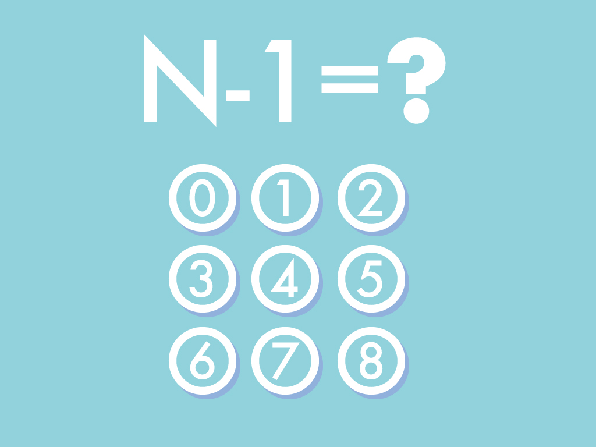

最後の難関
状況：プッシュボタン
なわ梯子をのぼるとそこにはひと一人が這いつくばって、ようやく通れるぐらいの通気口になっていた。
通気口は長かった。薄暗いなか四つん這いで進み続けてもなにもなく私は不安になった。
10分も経っただろうか、上方に突如、扉があった。金属でできた頑丈な扉だ。
どうやら地上へと繋がる扉のようだ。その脇には扉をあけるためであろうプッシュボタンがある。
0から9まで10のボタンが並んでいる。そして、ボタンの上には「N-1=？」と大きく書いてある。これはいったいどういうことだろう。